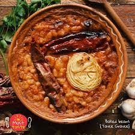

Tavce gravce

Description
This is a traditional dish in Macedonia. It is widely spread
across the whole Balkan region.
It's main ingredients are beans and spices, but from
house to house, country to country the recipe differs.
Ingredients
- 1/2kg Tetovo beans
- Mixed spices
- Red pepper powder and flour
- 3 dried red peppers
Steps
- Set the beans to soak in water over night
- The next day put the beans in new water to boil
- When the beans soften take them out
- Make a mixture of flour and red pepper powder
- Mix them all and put them in a baking pan
- Put 3 dried red peppers on top
- Bake for 2 hours on 250 degrees Celsius
Home